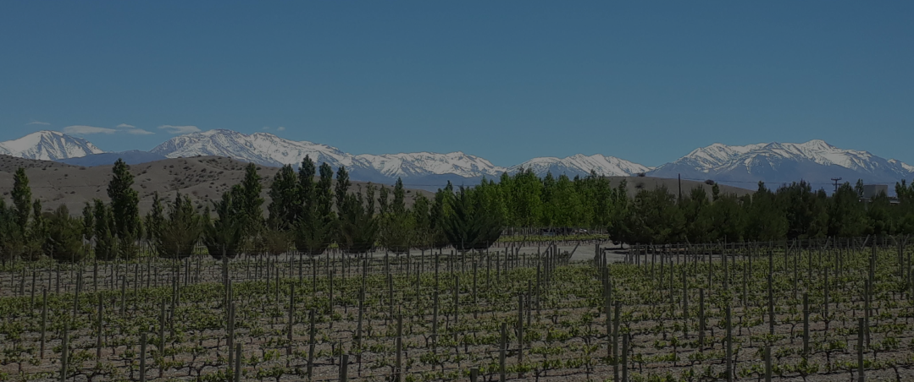
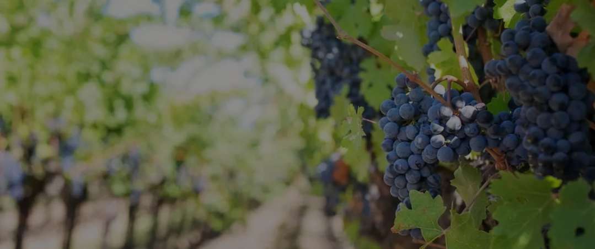
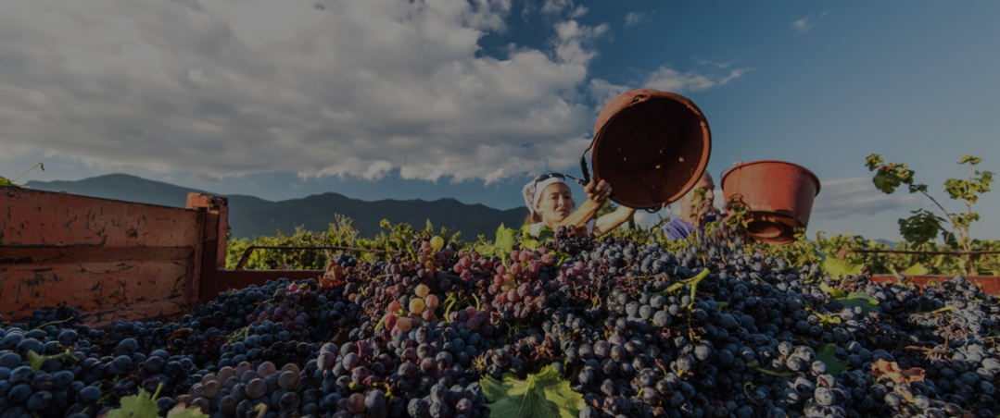
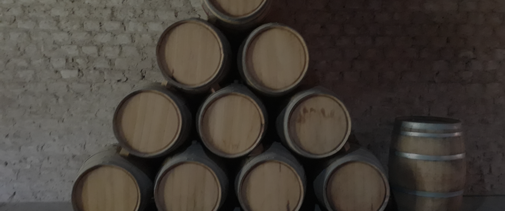
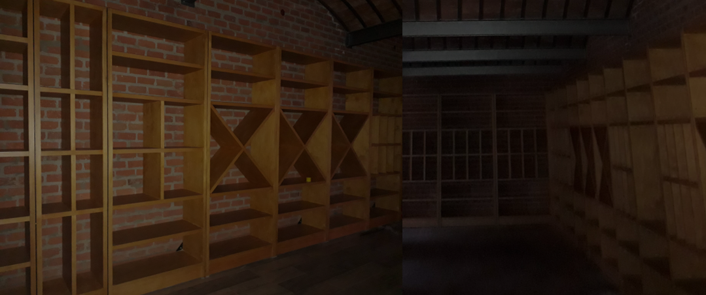

Bio

En el año 2007, comenzamos este proyecto en conmemoración a nuestro padre al pie de la Cordillera de los Andes.

Con nuestra primera cosecha de uva Cabernet Franc y Sauvignon Blanc decidimos lanzar nuestra pirmera marca de vinos “Viejo Bandido”.

Con un arduo trabajo, sacrificio y solidaridad nos enfocamos en vinos de calidad y excelencia tanto a nivel Nacional como Internacional.

Para el año 2020 comenzamos con la remodelación de nuestro depósito y la cava

En el año 2022 terminamos con las modificaciones y logramos el premio Innovador del Año 2023 de la Revista Wine Enthusiast.